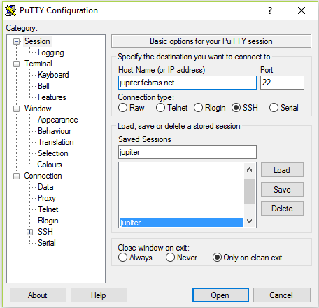

Руководство пользователя кластера OpenPOWER ВЦ ДВО РАН
Содержание
Версия: 0.1
Дата: 16.05.2017
Данное руководство содержит минимально необходимый объем информации
для работы на кластере ВЦ ДВО РАН: описание процесса регистрации,
сведения по работе в ОС Linux (вход в систему, работа с каталогами и
файлами, мониторинг) и работе с MPI программами и не параллельными
программами на кластере (компиляция, запуск, остановка, работа с
очередями). В тексте под термином параллельная программа
подразумеваются только MPI программы.
Команды и переменные командного интерпретатора, названия программ, листинги, непосредственный ввод/вывод консоли выделены моноширинным шрифтом.
Вопросы относительно работы кластера следует отправлять на e-mail: support@hpc.febras.net.
Вопросы относительно этого документа (ошибки, неточности, предложения) можно отправлять на e-mail: support@hpc.febras.net.
1 Регистрация
Регистрация пользователей на кластере происходит через систему ЦКП http://ckp.ccfebras.ru/.
2 Вход в систему
Для работы с системой пользователь должен иметь свою учетную запись на управляющем узле кластера. Регистрация пользователя на кластере происходит в соответствии с предыдущей частью руководства. После регистрации пользователь получает свое имя (логин), пароль и домашнюю директорию. Если имя пользователя, например, будет user, то домашняя папка находится в /home/user.
При первом входе в систему предлагается сменить пароль. Требования к
новому паролю: он должен быть достаточной длины, содержать хотя бы 1
цифру и 1 заглавную букву. Директория ~/.ssh содержит пару ключей
(id_rsa и authorized_keys) для доступа к узлам кластера. При
добавлении личного ssh-ключа, необходимо добавить открытый ключ в файл
authorized_keys через перенос строки (т.е. после уже имеющегося одного
открытого ключа).
Пользователи имеют возможность работать на кластере с любой машины, находящейся в сети института и интернет. Для входа в систему пользователю необходим адрес сервера (jupiter.febras.net), а также имя и пароль, полученные при регистрации.
2.1 Вход с Windows-машины
Работа с системой осуществляется по безопасному протоколу SSH при помощи какого-либо ssh-клиента. Клиент должен поддерживать протокол версии 2. Рекомендуется использовать PuTTY. Эта программа является свободно распространяемой и проста в использовании.
После запуска программы (рис. 1) пользователь должен выбрать протокол ssh и в поле «Host Name (or IP address)» указать адрес сервера. Нажатие на «Open» приведет к отправке запроса на подключение. В случае успешного подключения к серверу будет предложено ввести имя (логин), а затем и пароль.

Рис. 1.: Окно ssh-клиента PuTTY
При вводе пароля символы на экране не отображаются. Если все введено правильно, то пользователь автоматически окажется в своей домашней директории. Этот каталог доступен пользователю с любого узла кластера.
Примечание. На кластере существует единое дисковое пространство для директорий /opt (только чтение) и /home. Все узлы используют дисковый массив сервера посредством сетевой файловой системы NFS. Файл записанный на одном из узлов кластера автоматически становится доступен на любом другом.
Работа в ssh-сессии происходит в терминальном (текстовом, консольном)
режиме. Необходимо помнить, что консоль Linux, в отличии от Windows,
различает регистр вводимых символов, то есть mydoc.txt и mydoc.TXT не
одно и то же. После входа на экране отображается консоль командного
интерпретатора в следующем формате имя_пользователя@машина текущий_каталог:
[user@jupiter ~]$
3 Копирование файлов
См. соответсвующий раздел руководства кластера версии 5.0.
4 Работа на кластере
4.2 Редактирование файлов
См. соответсвующий раздел руководства кластера версии 5.0.
4.3 Компиляция программ
На кластере (на 16.05.2017) поддерживаются следующие компиляторы языков программирования для архитектуры ppc64le:
| Компилятор | Путь к файлу компилятора | Язык |
| GNU C 4.8.5 | /usr/bin/gcc | C |
| GNU C++ 4.8.5 | /usr/bin/g++ | C++ |
| GNU Fortran 4.8.5 | /usr/bin/gfortran | Fortran 90 |
| IBM XL Fortran 15.1.5 | /usr/bin/xlf | Fortran 77 |
| IBM XL Fortran 15.1.5 | /usr/bin/xlf90 | Fortran 90 |
| IBM XL C 13.1.5 | /usr/bin/xlc | C |
| IBM XL C++ 13.1.5 | /usr/bin/xlc++ | C++ |
| NVIDIA Cuda 8.0.61 | /usr/local/cuda/bin/nvcc | C/C++ |
Компиляторы GNU и IBM XL находятся в каталоге, доступном для всех пользователей. Поэтому, например, при вызове команды:
[user@jupiter ~]$ xlc
будет запускаться компилятор IBM XL C 13.1.5. В переменной среды «LD_LIBRARY_PATH» также указаны пути к библиотекам этих компиляторов.
На кластере используется система модулей окружения (Environment Modules). Загруженные модули можно посмотреть с помощью команды:
[user@jupiter ~]$ module list Currently Loaded Modulefiles: 1) pbs 2) cuda 3) essl 4) spectrum_mpi
Видно, что в отличии от компиляторов GNU и IBM XL, компилятор cuda подключается при помощи соответствующего модуля. Среди подключенных по-умолчанию модулей находится и spectrum_mpi.
В качестве реализации MPI библиотеки на кластере (на 16.05.2017) поддерживается IBM Spectrum MPI. Кроме того, можно использовать любую из имеющихся дополнительных реализаций, подключив необходимый модуль:
module unload spectrum_mpi module load openmpi/gcc/1.10.6/4.8.5
Все реализациии MPI конфликтуют между собой, поэтому необходимо предварительно отключать альтернативный модуль. После подключения нужного модуля, пути к данной библиотеке добавляются в переменные среды «PATH» и «LD_LIBRARY_PATH».
Список доступных модулей можно увидеть с помощью команды:
[user@jupiter ~]$ module avail ------------------------------------------ /usr/share/Modules/modulefiles ------------------------------------------- dot module-git module-info modules null use.own ------------------------------------------------- /etc/modulefiles -------------------------------------------------- cuda openmpi/gcc/2.1.0/4.8.5 openmpi/xl/2.1.0 spectrum_mpi essl openmpi/pgi/1.10.2/2016 pbs openmpi/gcc/1.10.6/4.8.5 openmpi/xl/1.10.6 pgi/16.10(default) openmpi/gcc/2.0.2a1/4.8.5 openmpi/xl/2.0.2a1 pgi/2016
Для компиляции mpi программ лучше всего использовать обёртки к
компиляторам, чем вручную прописывать для этого специальные
флаги. Так, например, чтобы скомпилировать mpi программу, написанную
на языке Fortran, нужно воспользоваться оберткой mpifort. Данная
команда вызовет компилятор IBM XL Fortran (при условии, что подключен
модуль spectrum_mpi), с указанием всех необходимых флагов.
Распишем соответствие между обертками и соответствующими им компиляторами:
| Обертка | XL | GNU |
| mpicc | xlc_r | gcc |
| mpifort | xlf_r | gfortran |
| mpif77 | xlf_r | gfortran |
| mpif90 | xlf90_r | gfortran |
| mpic++ | xlC_r | g++ |
| mpicxx | xlC_r | g++ |
Для того, чтобы посмотреть какие опции компилятора указываются при вызове обертки, можно воспользоваться следующей командой:
[user@jupiter ~]$ mpicc -show gcc -I/opt/soft/openmpi/1.10.6/gcc/include -pthread -Wl,-rpath -Wl,/opt/soft/openmpi/1.10.6/gcc/lib -Wl,--enable-new-dtags -L/opt/soft/openmpi/1.10.6/gcc/lib -lmpi
Как видно из данного вывода, единственными опциями, которые может потребоваться указать при вызове компилятора, могут оказаться опции оптимизации.
4.3.1 Замечания по разработке программ на отдельной машине
Практически все реализации MPI поддерживают запуск параллельных приложений в режиме эмуляции на отдельно взятой рабочей станции. Это можно делать как на Linux, так и Windows машинах.
В Linux рекомендуется использовать пакет OpenMPI, а для создания MPI приложений на Windows машинах можно использовать пакет MPICH в версии для Windows. Для успешного портирования программ с Windows на Linux не следует использовать расширения предоставляемые средами программирования, такими как Visual Studio и Borland Builder.
Подготовленные исходные коды программ лучше всего компилировать на кластере.
4.4 Запуск задач
4.4.1 Диспетчеризация задач
Для диспетчеризации задач на кластере используется система PBS Pro. С её помощью пользователь может отправлять свои задачи на исполнение, снимать их с исполнения и получать информацию по текущему статусу задачи.
Данная система построена на основе очередей, где под очередью понимается набор пользовательских процессов (программ, задач) выполняющихся в рамках системы диспетчеризации. Каждой очереди сопоставлен ряд атрибутов, в зависимости от которых к задаче будут применены те или иные действия. Типичными атрибутами являются название (идентификатор) очереди, её приоритет, доступные ресурсы, количество задач. В общем случае термин очередь не означает, то что программы в ней будут выполняться строго последовательно.
Чтобы поставить задачу на исполнение, пользователь должен добавить ее
при помощи команды qsub в какую-либо очередь. Очереди отличаются
друг от друга совокупностью ресурсов, которыми они обладают.
4.4.2 Система очередей
На данный момент действует 1 очередь: workq.
Для получения информации об очередях, можно выполнить команду qstat -q:
[eab@jupiter install]$ qstat -q
server: jupiter1
Queue Memory CPU Time Walltime Node Run Que Lm State
---------------- ------ -------- -------- ---- ----- ----- ---- -----
workq -- -- -- -- 0 0 -- E R
----- -----
0 0
Queue – имя очереди; Run – число выполняемых задач; Que – число задач, ожидающих начала выполнения.
Команда qstat -Qf имя_очереди позволяет получить информацию о конкретной очереди.
4.4.3 Постановка задачи в очередь
Для постановки задачи в очередь на исполнение используется команда
qsub. Данная команда принимает в качестве параметра имя скрипта, в
котором описываются требуемые задачей ресурсы и указываются команды,
исполняемые при запуске. Рассмотрим пример, иллюстрирующий запуск
ранее скомпилированной программы на 1 чанке (некоторой виртуальной
части) кластера, с использованием 4 mpi процессов, выделением 4
процессоров и 1 GPU на этом чанке:
[user@jupiter mpi_test]$ cat mpi_test.qsub #PBS -k oe #PBS -l select=1:mpiprocs=4:ncpus=4:ngpus=1 #PBS -l place=shared #PBS -r n #PBS -M user@mail.com #PBS -m abe #PBS -q workq #PBS -N mpi_test #!/bin/sh cd /home/user/test/mpi_test module unload spectrum_mpi && module load openmpi/gcc/1.10.6/4.8.5 mpirun ./mpi exit 0 [user@jupiter mpi_test]$ qsub mpi_test.qsub 66330.jupiter1
Если команда выполнена успешно, то на экране отобразится идентификатор задачи (в данном случае это 66330.jupiter1), в противном случае появится сообщение об ошибке. Ошибки пользовательской программы (неправильная компиляция и т.п.) проявятся только при переходе задачи к активному состоянию.
Примечание. Весь вывод программы в стандартный поток и в поток ошибок
перенаправляется в файлы, находящиеся в домашней директории пользователя.
Названия таких файлов имеют формат имя_задачи.(e/o)порядковый_номер. Для
запущенной задачи это будут: mpi_test.e66330 – для потока ошибок и
mpi_test.o66330 – для стандартного потока вывода.
Прокомментируем каждую из строчек скрипта mpi_test.qsub:
#PBS -k oe — указание сброса потока вывода (o) и потока ошибок (e)
#PBS -l select=1:mpiprocs=4:ncpus=4:ngpus=1 — требуемое количество чанков (1); количество mpi процессов (4), количество выделяемых процессоров (4) и количество выделяемых GPU (1) на каждом чанке
#PBS -l place=shared — использование узла вместе с другими задачами; shared — совместное использование, excl — монопольное использование
#PBS -r n — является ли задача перезапускаемой (задачей с контрольными точками);
y — является, n — не является
#PBS -M user@mail.com — почтовый адрес пользователя
#PBS -m abe — какие сообщения отправляются на указанный адрес (a — ошибка в
выполнении задачи, b — начало выполнения, e — завершение
выполнения)
#PBS -q workq — идентификатор очереди
#PBS -N mpi_test — название задачи
#!/bin/sh — указание необходимого командного интерпретатора
cd /home/user/test/mpi_test — переход в директорию с исполняемым файлом
module unload spectrum_mpi && module load openmpi/gcc/1.10.6/4.8.5 — выбор openmpi вместо spectrum_mpi
mpirun ./mpi — запуск приложения
exit 0 — выход
4.4.4 Запуск интерактивных программ
Программы, использующие стандартный ввод, называются интерактивными. Как правило, такие программы после запуска требуют от пользователя ввода данных. При постановке задачи в очередь любая программа переводится в фоновый режим. В этом режиме ввод данных пользователем в запущенную программу невозможен. Для передачи данных таким программам используется механизм перенаправления стандартных потоков ввода/вывода.
Для перенаправления подготавливается текстовый файл, содержимое
которого в точности представляет собой данные, вводимые пользователем.
Например, если программа solver предполагает ввод в первой строке
размерности матрицы, а во второй количества итераций, то текстовый
файл input.txt будет иметь вид:
[user@jupiter solver]$ cat input.txt 10000000 1000
После каждого числа обязателен символ новой строки. Запуск программы на выполнение производится так:
solver < input.txt
Скрипт для постановки в очередь задания, в рамках которого будет выполняться интерактивная программа, будет выглядеть следующим образом:
[user@jupiter solver]$ cat job.qsub #PBS -k oe #PBS -l select=1:ncpus=8:mpiprocs=8 #PBS -r n #PBS -M user@mail.com #PBS -m abe #PBS -q workq #PBS -N solver #!/bin/sh cd /home/user/test/solver mpirun ./solver < ./input.txt exit 0
4.4.5 Запуск непараллельных программ
Запуск непараллельных программ практически ничем не отличается от запуска параллельных
программ. Единственное отличие заключается в том, что в qsub скрипте такой программы необходимо
указать, что для её работы необходим только один логический процессор:
#PBS -l select=1:ncpus=1
Также в этом скрипте необходимо запускать непосредственно исполняемый
файл программы, то есть не использовать для запуска mpiexec.
4.4.6 Состояние пользовательских задач
Для получения информации об очередях и задачах пользователя
используется команда qstat. Выполнение этой команды без параметров
покажет все задачи пользователя и их состояние.
[user@jupiter ~]$ qstat Job id Name User Time Use S Queue ----------------------- ---------------- --------------- -------- - ----- 700.jupiter1 mpi_test user 00:10:40 R workq 701.jupiter1 sample_job user 0 Q workq 702.jupiter1 solver user 0 Q workq
Job id — идентификатор задачи, полученный при выполнении qsub;
Name — имя задачи; User — имя пользователя, запустившего задачу;
Time Use — процессорное время, потраченное задачей; S (State) — с
остояние задачи ( R – задача выполняется, Q – ожидает в очереди);
Queue — очередь.
В данном случае пользователю user принадлежат три задачи.
С помощью команды qstat -n идентификатор_задачи можно получить
список узлов, на которых выполняется конкретная задача. Эта информация
полезна при мониторинге эффективности использования вычислительных
ресурсов с использованием системы Ganglia, так как позволяет
отслеживать состояние только используемых задачей узлов.
[user@jupiter ~]$ qstat -n 701
jupiter1:
Req'd Req'd Elap
Job ID Username Queue Jobname SessID NDS TSK Memory Time S Time
--------------- -------- -------- ---------- ------ --- --- ------ ----- - -----
298.jupiter1 eab workq mpi_test -- 1 4 2gb 00:00 R --
jupiter1/0*4
Для получения более подробной информации о конкретной задаче можно запустить команду
qstat -f идентификатор_задачи.
4.4.7 Остановка задач
Остановка программы производится командой qdel идентификатор_задачи
[user@jupiter ~]$ qdel 700
Этой командой задача, стоящая в очереди, убирается из нее, а выполняющаяся задача снимается с выполнения. Следующая по очереди и приоритету задача встает на выполнение.
Задача снимается в течении некоторого времени, поэтому при вызове
qstat непосредственно после qdel удаленная задача все еще может
быть отражена в таблице.
5 Мониторинг
5.1 Web-интерфейс
Мониторинг кластера реализован при помощи системы Ganglia. Эта система позволяет следить за ресурсами кластера посредством web-интерфейса. Система мониторинга находится по адресу http://jupiter.febras.net/ganglia.
Для мониторинга пользователю доступно большое число типов ресурсов: загруженность процессора, оперативная память, загрузка сети, средняя загрузка, количество процессов и ряд других. Имеется возможность наблюдать как за всеми узлами в кластере (по одному параметру), так и за каждым (по всем параметрам).
5.2 Консоль
Кроме графического интерфейса существует несколько полезных консольных
команд для мониторинга. Команда pbsnodes имя_узла позволяет
получить информацию о конкретном узле: тип, состояние, количество
процессоров, выполняющиеся задачи. Ниже представлен фрагмент вывода
этой команды.
[user@jupiter ~]$ pbsnodes jupiter2
jupiter2
Mom = jupiter2
Port = 15002
pbs_version = 14.1.0
ntype = PBS
state = free
pcpus = 160
resources_available.arch = linux
resources_available.host = jupiter2
resources_available.mem = 263653568kb
resources_available.ncpus = 160
resources_available.ngpus = 2
resources_available.vnode = jupiter2
resources_assigned.accelerator_memory = 0kb
resources_assigned.mem = 0kb
resources_assigned.naccelerators = 0
resources_assigned.ncpus = 0
resources_assigned.netwins = 0
resources_assigned.ngpus = 0
resources_assigned.vmem = 0kb
resv_enable = True
sharing = default_shared
state – состояние узла (job-exclusive – все ресурсы узла заняты; free – на узле есть свободные ресурсы для запуска заданий; offline – узел временно выведен из эксплуатации, запуск заданий на нем невозможен; down – узел выключен); pcpus – число процессорных потоков на узле; jobs – задачи, запущенные на узле; resources_available.ngpus – число GPU на узле.
При выполнении команды pbsnodes -a -S -j будет выведена сводная информация обо
всех узлах кластера.
[user@jupiter ~]$ pbsnodes -a -S -j
mem ncpus nmics ngpus
vnode state njobs run susp f/t f/t f/t f/t jobs
--------------- --------------- ------ ----- ------ ------------ ------- ------- ------- -------
jupiter1 free 0 0 0 251gb/251gb 160/160 0/0 2/2 --
jupiter2 free 0 0 0 251gb/251gb 160/160 0/0 2/2 --
jupiter3 free 0 0 0 251gb/251gb 160/160 0/0 2/2 --
jupiter4 free 0 0 0 251gb/251gb 160/160 0/0 2/2 --
jupiter5 free 0 0 0 251gb/251gb 160/160 0/0 2/2 --
6 Справочная информация
Описание основных команд при работе в ОС Linux – http://wwwinfo.jinr.ru/unixinfo/pc/lin_os.html Документация к системе диспетчеризации заданий PBS Pro — http://www.pbsworks.com/pdfs/PBSUserGuide14.2.pdf